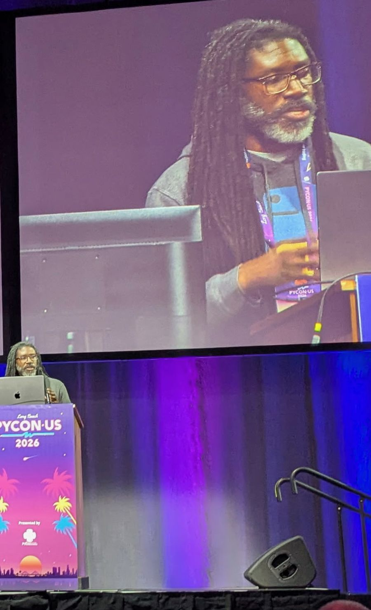
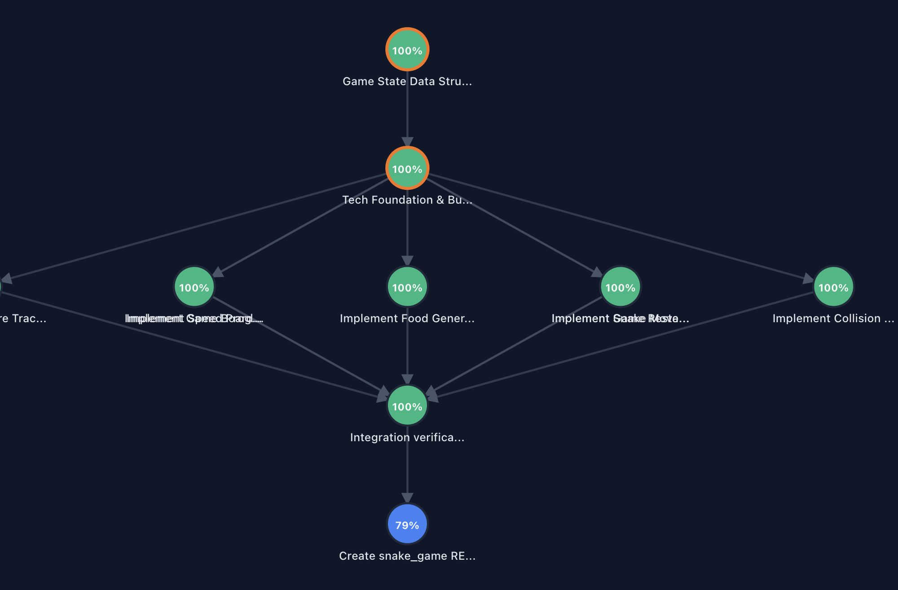
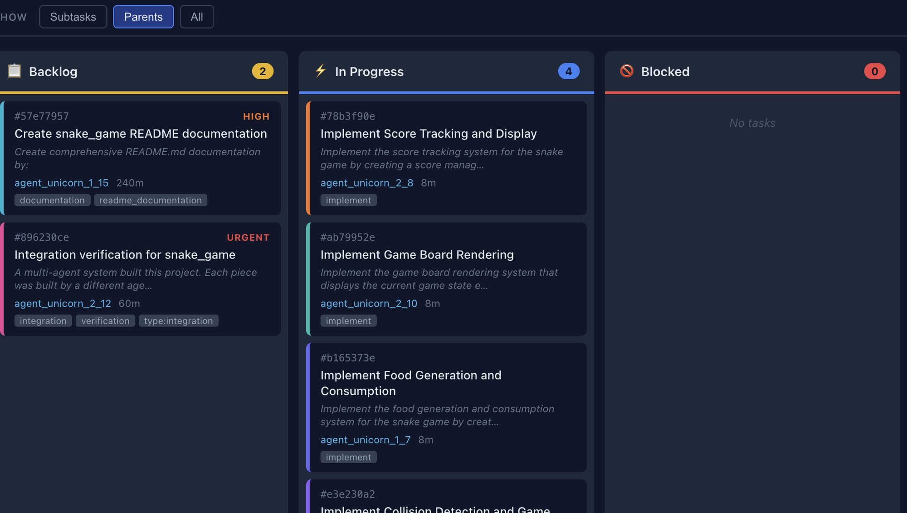
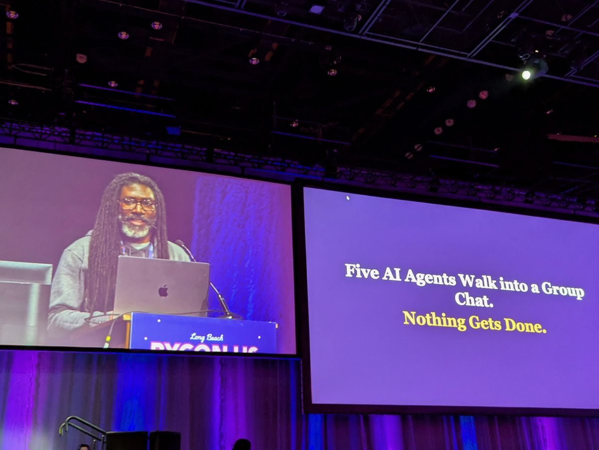
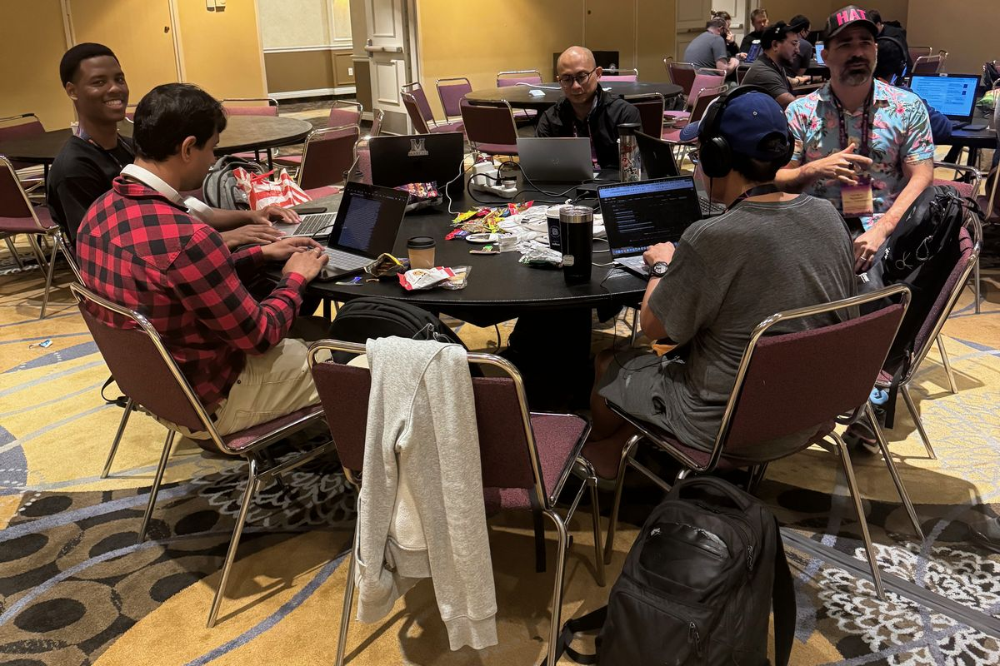

I take hard problems apart.
Then I build the systems that coordinate the pieces, and I teach other people to do both.
ML educator at Blue River Technology (John Deere) and Georgetown. Builder of Marcus. PhD, Johns Hopkins University School of Medicine.
How I think
I come at problems as a systems thinker with a beginner’s mindset. Most of what looks complicated is a small number of simple pieces that have not been taken apart yet. Whether the work is a curriculum, a codebase, or a live class, it tends to follow the same three moves.
Decompose
Break the problem into pieces small enough that someone new to it can actually hold one in their head.
Coordinate
Put those pieces in relation to each other through a shared, visible record, not a chain of private assumptions.
Keep the receipts
Ground every claim in something checkable. Show the work instead of just asserting the conclusion.
Why this matters to me
In my mid-twenties I was a PhD student at Johns Hopkins University School of Medicine, doing research I believed could treat a rare disease. Then my grandmother died, and grief turned into a depression that did not lift. At thirty I was diagnosed bipolar. For years I could barely read or write. I finished my dissertation by speaking it aloud, one slow sentence at a time, while my wife typed.
What pulled me back, alongside medication and the patience of the people around me, was Python. Not the syntax, the shape of it: take a problem apart until each piece is small enough to hold, solve the piece, build back up. That is decomposition, the same move at the top of this page, and for a long time it was the only thing my mind could still do. It was not a cure and it was never a substitute for treatment, but it was the first thing that worked. I still teach it like it once saved someone's life, because it saved mine. I say this out loud because most people in technical careers still cannot, and I would rather be one more who does. The longer version is in an essay I wrote about it, in my PyData NYC keynote, and in interviews.

What I build
Marcus
An open-source server for coordinating multiple AI agents without having them talk to each other. Two agents in conversation works fine. At three they start arguing, at four they second-guess each other, and by five they burn through their context windows and get measurably worse. That is not an intelligence problem, it is an organizational design problem, so Marcus replaces the conversation with a Kanban board: every task carries everything an agent needs, and agents pull work off the board instead of negotiating over it.
To test the idea on its own, I stripped it down to marcus-mini, three moving parts in plain Python, and benchmarked it against AutoGen and LangGraph on the same task graphs with the same model: three times faster at nine tasks, seven times faster at twenty-seven, with the gap widening as the project grows. The full system is about 120,000 lines of Python, open source since May 2025. Three different coding agents, Claude Code, Codex, and Gemini CLI, have built software together on it without exchanging a single message, and you can see what each one did and what it cost. I organized a sprint for Marcus at PyCon, with a hosted endpoint and printed guides so people could start contributing in an afternoon.




Yellowbrick
Core contributor and maintainer of the open-source Python library for visualizing machine learning model selection. It is where I got started in open source, and where I learned to build software other people could maintain.
NumFOCUS
Served on the board of directors of the nonprofit behind NumPy, pandas, Jupyter, and the PyData conferences from 2022 to 2025, including as chair. Before the board, I sat on its small development grants and affiliated project selection committees.
Mastering Python: A Problem-Solving Approach
Commissioned by Manning, unpublished. A book about using Python to practice decomposition, pattern recognition, abstraction, and algorithmic thinking, not just syntax.
Teaching
Georgetown University
Program Director for Data Analytics at the School of Continuing Studies, and an instructor there since 2018. More than 300 students through Data Analytics and Data-Driven Decision Making, with a 97 percent completion rate.
Blue River Technology (John Deere)
Senior ML Educator since 2025. More than 200 engineers taught live across nine concurrent courses in 2026, from introductory Python through generative AI and retrieval systems, with 92 percent of ratings at 4 or 5 across 39 course evaluations. Tech lead on 15 AI projects since January 2026, 12 of them now in production, including a warranty-claim classifier that avoided more than $500K in payouts in its first four months. Built Course Master, a curriculum-design method selected for adoption across John Deere; its first cohort of engineer-instructors begins October 2026.
Free teaching material lives in the Python Teaching Toolkit, including the short guide to when Python wants parentheses, brackets, or braces that beginners ask about most.
Writing and talks
I write and speak about open source, coordination, and what actually happens when you put multiple AI agents in a room together.
On stage I take on how people actually learn to program, building open source communities that last, social capital in the data science ecosystem, coordination in multi-agent systems, and mental health in technical careers.


Open Source, Open Roads: Mapping the Human Element in Tech
Building Strong and Sustainable Open Source Projects: Lessons from an Epic Road Trip
20 Ideas to Build Social Capital in the Data Science Ecosystem
Five AI Agents Walk into a Group Chat. Nothing Gets Done
These are four from a set of nine, recorded over the last six years. Watch the full playlist on YouTube.
I am also writing a series on LinkedIn about the specific ways multi-agent systems fail and cohere, starting with a piece on retry pressure. Follow along on LinkedIn.
Essays
- How Python Helped Me Relearn to Think and Transformed My LifeThe written version of the story above.
- The Journey to a Book Deal: Navigating Tech, Race, and Self-DoubtHow the Manning contract happened, and what stood in the way.
- Three Ways a Graduate Degree in the Humanities or Arts Prepares You for Data ScienceFor career changers who think they are starting from zero.
- What if Einstein Didn't Understand the Order of Operations?A teaching piece on how Python evaluates an expression.
Talk to me
For speaking invitations, questions about Marcus, or just to say hello. The fastest route is a slot on my calendar.
- Calendar
- calendar.app.googlePick a time that works; no back and forth.
- linkedin.com/in/larry-gray-phdWhere I post and reply most.
- lwgray@gmail.comIf you would rather write.
- GitHub
- github.com/painted-porch/marcusMarcus, and the rest of the open-source work.